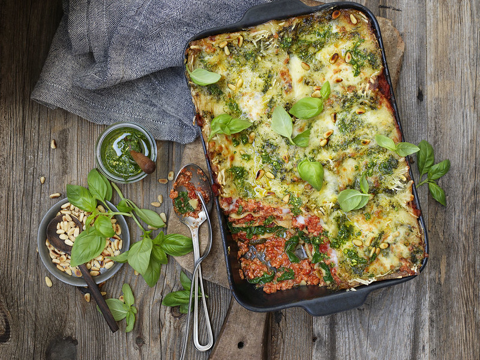

Vegan Lasagna

A tasty, plant-based alternative
Made with crumbled tofu and vegan cheese, this lasagna comes together in just over an hour.
Yields 6 servings.
Ingredients:
- 2 teaspoons vegetable oil
- 1/4 onion, finely chopped
- 1 green bell pepper, finely chopped
- 1 pound mushrooms, finely chopped
- 1 can petite diced tomatoes
- 1 can crushed tomatoes
- 1 package firm tofu, drained and crumbled
- 1 package baby spinach, coarsely chopped
- 2 cloves garlic, minced
- 1 teaspoon dried parsley
- 1 teaspoon dried basil
- 1 teaspoon dried oregano
- 1/4 teaspoon salt
- black pepper to taste
- 1 pinch red pepper flakes
- 1 package lasagna noodles
- 1 package shredded vegan mozzarella
- 1/2 cup water
Steps:
- Preheat oven to 400 degrees F (200 degrees C). Lightly oil a 9x13-inch baking dish.
- Heat oil in a large skillet over medium-high heat. Add onions and bell pepper; cook and stir until onion turns translucent and pepper begins to soften, 3 to 5 minutes. Add mushrooms; cook and stir until mushrooms soften, about 4 minutes.
- Stir diced tomatoes, crushed tomatoes, tofu, chopped spinach, garlic, parsley, basil, oregano, salt, pepper, and crushed pepper flakes into mushroom mixture. Bring to a simmer; reduce heat to medium-low and simmer sauce for 10 minutes.
- Pour a layer of the sauce into prepared baking dish. Cover with a layer of lasagna noodles. Add another layer of sauce and continue alternating layers of sauce and pasta, ending with sauce. Top with shredded cheese. Carefully add water. Cover baking dish with aluminum foil.
- Bake in preheated oven until pasta is fully cooked, about 40 minutes.